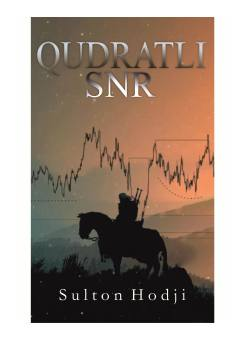

SSTreydingda qo'llab-quvvatlash va qarshilik chiziqlarini tahlil qilish bo'yicha amaliy qo'llanma.
Ushbu kitob treyding sohasidagi qo'llab-quvvatlash va qarshilik (SNR) chiziqlarini amaliy tahlil qilish usullarini o'rgatadi. Muallif fond, kripto va xalqaro moliya bozorlarida muvaffaqiyatli savdo qilish uchun zarur bo'lgan texnik ko'nikmalarni o'z tajribasi asosida tushuntirib beradi.